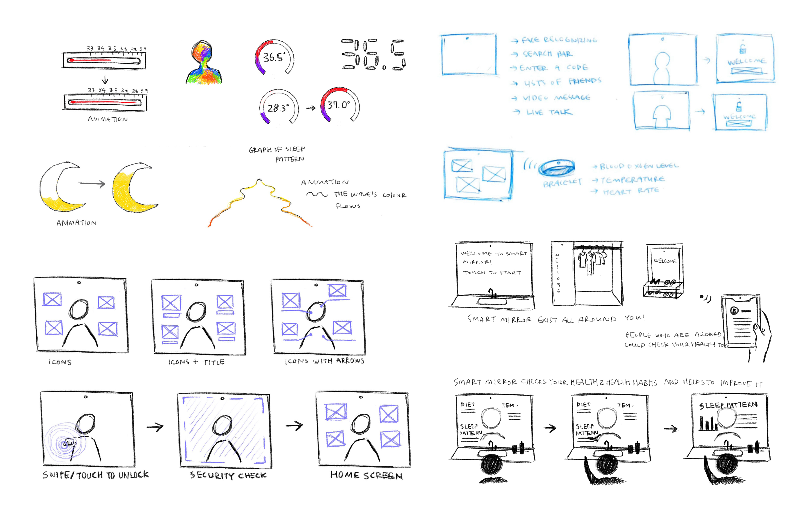

<!DOCTYPE html>
<html>

<head>
    <meta charset="UTF-8">
    <meta name="viewport" content="width=device-width, intitial-scale=1">
    <link rel='stylesheet' text='text/css' href='vendors/css/normalize.css'>
    <link rel='stylesheet' text='text/css' href='vendors/css/grid.css'>
    <link rel='stylesheet' text='text/css' href='vendors/css/ionicons.min.css'>

    <link rel='stylesheet' text='text/css' href="resources/css/style.css">
    <link rel="stylesheet" href="resources/css/queries.css">

    <link rel="preconnect" href="https://fonts.gstatic.com">
    <link href="https://fonts.googleapis.com/css2?family=Raleway:ital,wght@0,300;0,400;0,500;0,600;1,300;1,400;1,500;1,600&display=swap" rel="stylesheet">
    <link rel="preconnect" href="https://fonts.gstatic.com">
    <link href="https://fonts.googleapis.com/css2?family=Brygada+1918:wght@400;500;600;700&display=swap" rel="stylesheet">

    <link rel="stylesheet" href="https://use.typekit.net/qlj0vch.css">

    <title>Su Hyun Jung</title>
</head>
</html>


<body>

    <div class="content">

        <header>
            <div class="row index-header">

                <div class="row col span-1-of-3 index-btn">
                    <a href="projects.html" class="button">&nbsp;Portfolio&nbsp;</a>
                    <a href="about.html" class="button">&nbsp;About&nbsp;</a>
                </div>

                <div class="row col span-1-of-3 index-name">
                    <a href="index.html" class="index">SU HYUN JUNG</a>
                </div>

                <div class="row col span-1-of-3">
                    <h3>the <em>INTERACTION DESIGNER</em></h3>
                </div>
            </div>
        </header>
        
        <section>
            <div class="alive-background">
                <div class="row">
                    <div class="row alive-font project-background">

                        <div class="col span-1-of-2 individual-title">
                            
                        </div>

                        <div class="col span-1-of-2 individual-title">
                            <h2><em>Alive</em></h2>
                            <h4>Sep - Dec 2020</h4>
                            <p>“Alive” is a system created to help people who are living through and after the pandemic to form community in an increasingly digitalized world. Alive assists users in managing their mental health inside their community by providing indoor activities and social gathering opportunities through a life-sized streaming screen. Moreover, it allows users to watch their loved ones anytime through the screen when they miss them or want to check in with them. Through the virtual communication system, Alive allows people to gather together inside the digitized space; this platform encourages the feeling of coexisting in one space and without a feeling of isolation, which contributes to mental health issues.</p>
                        </div>
                    </div>

                </div>

                <div>
                    <div class="row project-background">
                        <ul class='alive-button'>
                            <li><a href='#process'>Process</a></li>
                            <li><a href='#contextual-analysis'>Contextual Analysis</a></li>
                            <li><a href='#design-process'>Design Process</a></li>
                            <li><a href='#prototype'>Prototype</a></li>
                        </ul>
                    </div>
                </div>

                <div class="row">

                    <div class=" row alive-blue" id="process">
                        <div class="alive-description">

                            <h3>Why Alive?</h3>

                            <div class="row">
                                <p>COVID-19 has changed our lifestyles. The pandemic resulted in lockdowns, economic downturn, political and social disruption, health crisis, etc. Among these occurrences, the most significant phenomenon, which would bring social alternation, is the anthropause. The anthropause is the term that describes the extreme reduction of human activity caused by the pandemic. Glancing at today’s situation, people have started to work, study and live online due to COVID-19. This online lifestyle drives people to be isolated and get used to living alone. The number of hermits may rise in a few years; however, humans will long for friends and accompany whom to share their day, condition and concerns. The speculative design has to prevent humans from being over solitary and disconnected from society. The goal of Alive is to encourage the users to care for friends’ and family members’ mental conditions in a digitalized world. Because socializing is becoming primarily digital, people lose the chance to encounter a companion face-to-face. Even though people have lost the possibility of facing friends in person, it is still crucial to examine and communicate with them. A lot of mental diseases such as depression starts with trouble maintaining relationships. If anthropause continues, then the rate of people who are having mental illness will rise.</p>
                            </div>
                        </div>
                    </div>

                    <div class="row alive-description alive-title">

                        <h3>Design Values</h3>

                        <div class="row alive-design-value">
                            <div class="alive-value">
                                Communication
                            </div>
                            <div class="alive-value">
                                Community
                            </div>
                            <div class="alive-value">
                                Transparency
                            </div>
                            <div class="alive-value">
                                Playful
                            </div>
                            <div class="alive-value">
                                Accessibility
                            </div>
                        </div>


                    </div>

                    <div class=" row alive-blue" id="contextual-analysis">
                        <div class="alive-description">
                            <h4>Contextual Analysis</h4>
                            <h3>Past & Modern Communities</h3>

                            <div class="row">
                                <p>Glancing back at past decades, communities “cooperated to fulfill their needs, joining others to hunt or farm or feed their families and to shield themselves from other groups” (Facing History and Ourselves), which required them to stay bound together. Gathering in front of a well to get water for homes, hunting together for food and clothing and preparing for an invasion all happened by communities sticking together. Most activities that bound people together are active and require physical movement. In the contemporary world, hunting or invasion are no longer common activities, but many people play sports to gather together. Because, currently, all social gatherings are suspended, we lose a chance to play various kinds of sports, which requires a high number of people. Group gym classes are also closed, which makes exercise as a social activity difficult. Current communication systems do not offer a solution to this problem. Alive would provide an opportunity to play a variety of sports inside the virtual room, which present in live size. Because all members would be placed in the same virtual room and play games together, users would stick together and create a deep relationship with other players.</p>
                            </div>
                            <h3 class="alive-contextual">Algorithms <em>“The Social Dilemma”</em></h3>

                            <div class="row">
                                <p>Because people have lost the chance to see each other’s face and communicate with them in person, the usage of social media has grown, and social media has become one of the only platforms to interact with other people. Yet, social media platform encourages users to self-isolate themselves watching it all day and avoiding relation. The documentary The Social Dilemma says the “Like” button from Facebook was intended to make people feeling content and joyful by receiving likes from others. However, different from the initial purpose, users become obsessed with how many likes they received, which brings high number of self-harm and suicides of U.S. teen girls between 2001 to 2010, which social media became available on mobile in 2009 (2020). People only believe what they are watching on social media, which is collected by algorithm based on their taste. Social Media constructs us to spend more time with it and to unconsciously controls our account to display massive information without filtering. This is a problem what we are encountering these days living with social media. Virtual room activity only works in real-time and provides a bunch of active gatherings, which would fulfill people with positive vibes to create Alive better. Users have to move or even make a swiping motion with arms to join the room. The system would not let users focusing on a small screen sitting all-day. Although the “watching” function could operate all day, users should do other crucial works happening in their real-life at the same time because the conversation cannot be happening through it. Furthermore, Alive does not save any information except a profile to avoid exposure, which is not relevant.</p>
                            </div>
                            <h3 class="alive-contextual">Marina Abramovic : <em>The Artist is Present</em></h3>

                            <div class="row">
                                <p>Marina Abramovic, the performance artist, challenges the limit of the body and the mind, and “test and discover the strength of [the body and the mind].” (MoMA Learning, 2010). Marina explored the complex relationship between an artist and an audience in her performance titled The Artist is Present. She sat on a chair and placed an empty chair across a table where she was sitting. Audiences were allowed to participate with her performance by sitting in the empty chair and gazing Marina without any words. More than 1000 people waited in the line to sit in the chair, and many of them were moved to tears without sharing their stories or even having a conversation with Marina. Ulay, who had a relationship with Maria twenty years ago, appeared on the performance and sat in front of her, gazing into each other’s eyes in twenty years. They both did not speak any words, but understood each other’s feeling just staring at each other’s face, and ended up with the tears. The “enormous need of humans to actually have contact,” which we are missing these days due to the pandemic (MoMA Learning, 2010). Staying all day at home brings society to lose a chance to face friends, families or even partners, which is the principal thing to prevent isolation. Sometimes, just watching other’s faces without any words or explanation relieves our stress and calms us, but we usually take it for granted. Alive provides an opportunity to users that they should watch their loved one’s face and live through a live-size screen without any conversation happening. Marina’s performance signifies that even if no conversation is happening, gazing at counterparts helps people to feel calm.</p>
                            </div>
                        </div>
                    </div>

                    <div class="row alive-description alive-title">
                        <h3>How it works?</h3>
                        <p>1. Alive is a screen that allows people to join a virtual room and participate in indoor activities and exercise more vividly through a life-sized screen. The window displays various virtual rooms all around the world listing top ranked rooms, live rooms and suggested rooms. Suggested rooms would be displayed through an algorism system based on keywords which users write themselves. It also has a search engine; thus, users could find a room which involves people with common interests. Before entering the room, users would get to choose whether they want to display their actual name or remain anonymous. The camera will perform a 360 degree scan of the users’ body to allow the system to display their side and back view to other members in the same room.</p>
                        <pre>blank line</pre>
                        <pre>blank line</pre>
                        <pre>blank line</pre>

                        <p>2. Alive is placed in a radius of movement, which assists users to interact with it naturally, feel more familiar and improve the usability of another crucial function of Alive. Alive provides an opportunity for users to watch their loved one’s scene through the screen. If two people click the “Like” button for each other, they will get a chance to watch the opponent’s scene whenever they want to. Alive is always powered on and will project the user’s space that is captured by the camera. Users get a chance to gaze at their precious people in life-size anytime. The gazing function will create the mood of existing in the same space with friends or families staring at them or doing their work in front of the screen. “Watching” function would bring users comfort and calm by glancing at a loved one’s face. Alive would gather people together inside the digitalized world, providing a feeling of coexisting in one space. Alive will prevent the anthropause and encourage a connected world after the pandemic.</p>
                    </div>

                    <div class="row alive-description alive-title alive-process" id="design-process">
                        <h3>Persona</h3>
                        
                        <h3>Emily's Journey Map</h3>
                        
                        <h3>SWOT Analysis</h3>
                        
                        <h3>Value Proposition Canvas</h3>
                        
                        <div class="alive-flows">
                            <h4>Task Flows</h4>
                            <h3>Watching Mode</h3>
                            
                            <h3>Join a Virtual Room</h3>
                            
                            <h3>Virtual Character Mode</h3>
                            

                            <h4>User Flow</h4>
                            <h3>Finding a Suitable Yoga Room</h3>
                            
                        </div>
                    </div>
                    
                    <div class="row alive-description alive-title">
                        <h3>Sketches + Storyboards</h3>
                        
                        <div class="alive-container">
  <div class="mySlides">
    <div class="numbertext">1 / 8</div>
    
  </div>

  <div class="mySlides">
    <div class="numbertext">2 / 8</div>
    
  </div>

  <div class="mySlides">
    <div class="numbertext">3 / 8</div>
    
  </div>
    
  <div class="mySlides">
    <div class="numbertext">4 / 8</div>
    
  </div>

  <div class="mySlides">
    <div class="numbertext">5 / 8</div>
    
  </div>
    
  <div class="mySlides">
    <div class="numbertext">6 / 8</div>
    
  </div>
   
   <div class="mySlides">
    <div class="numbertext">7 / 8</div>
    
  </div>
   
   <div class="mySlides">
    <div class="numbertext">8 / 8</div>
    
  </div>
    
  <a class="prev" onclick="plusSlides(-1)">❮</a>
  <a class="next" onclick="plusSlides(1)">❯</a>

  <div class="caption-container">
    <p id="caption"></p>
  </div>

  <div class="row">
    <div class="column-">
      
    </div>
    <div class="column-">
      
    </div>
    <div class="column-">
      
    </div>
    <div class="column-">
      
    </div>
    <div class="column-">
      
    </div>    
    <div class="column-">
      
    </div>
    <div class="column-">
      
    </div>
    <div class="column-">
      
    </div>
  </div>
</div>
                    </div>

                    <div class="row alive-description alive-title alive-prototype" id="prototype">
                        <div>
                            <h3>Video Prototype</h3>
                            <video width="100%" height="auto" controls>
                                <source src="resources/img/alive/video.mp4" type="video/mp4">
                                Your browser does not support the video tag.
                            </video>
                        </div>
                        <div class="row">
                            <h3>
                                <div class="alive-clickable">
                                    <a href="https://xd.adobe.com/view/f3678dae-8f69-44a7-80ef-8663de310660-a634/">Click Here for the Clickable Screen Prototype!</a>
                                </div>
                            </h3>
                        </div>
                    </div>

                </div>
            </div>
        </section>
       
       <footer>
            <div class="row">
                <div calss="col span-1-of-2">
                    <ul class="social-links">
                        <li><a href="https://www.facebook.com/profile.php?id=100001963323502"><i class='ion-social-facebook'></i></a></li>
                        <li><a href="https://www.instagram.com/suestudi_o/"><i class='ion-social-instagram'></i></a></li>
                        <li><a href="mailto:suhyun9861@gmail.com"><i class='ion-email'></i></a></li>
                    </ul>
                </div>
            </div>
            <div class="row">
                <p>Copyright &copy;2021 by Su Hyun Jung. All rights reserved.</p>
            </div>
        </footer>
        
       <script>
var slideIndex = 1;
showSlides(slideIndex);

function plusSlides(n) {
  showSlides(slideIndex += n);
}

function currentSlide(n) {
  showSlides(slideIndex = n);
}

function showSlides(n) {
  var i;
  var slides = document.getElementsByClassName("mySlides");
  var dots = document.getElementsByClassName("demo-");
  var captionText = document.getElementById("caption");
  if (n > slides.length) {slideIndex = 1}
  if (n < 1) {slideIndex = slides.length}
  for (i = 0; i < slides.length; i++) {
      slides[i].style.display = "none";
  }
  for (i = 0; i < dots.length; i++) {
      dots[i].className = dots[i].className.replace(" active", "");
  }
  slides[slideIndex-1].style.display = "block";
  dots[slideIndex-1].className += " active";
  captionText.innerHTML = dots[slideIndex-1].alt;
}
</script> 
       <script src="https://ajax.googleapis.com/ajax/libs/jquery/3.5.1/jquery.min.js"></script>
        <script src="vendors/js/jquery.waypoints.min.js"></script>
        <script src="resources/js/script.js"> </script>
        
    
    </div>
</body>